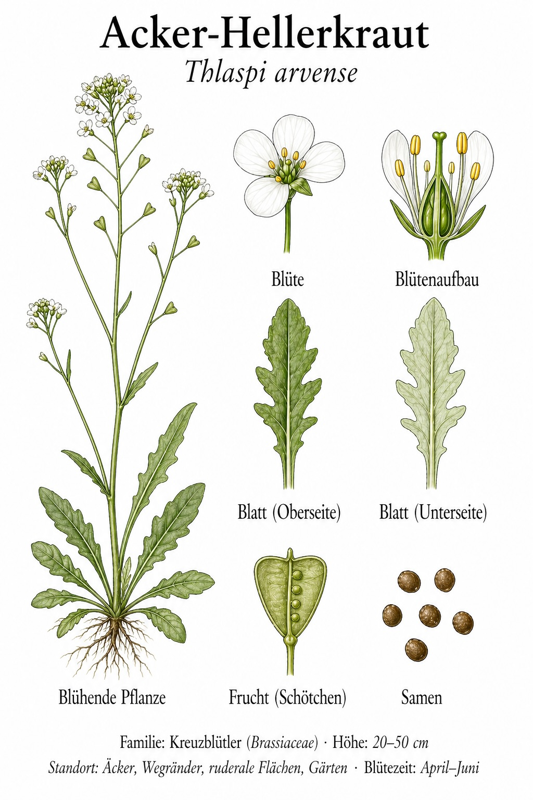
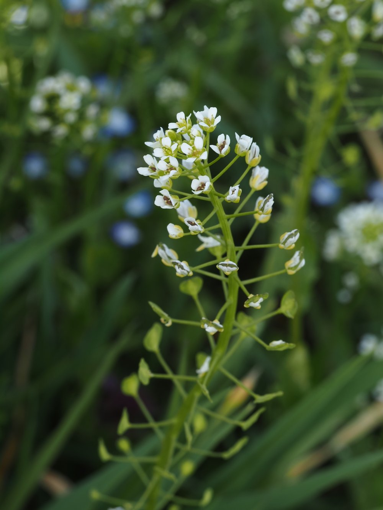

Klein, unscheinbar – und ein Meister der Selbstbestäubung.


Der Heller – eine Münze als Namensgeber
Die flachen, runden Schötchen des Acker-Hellerkrauts sehen aus wie kleine Münzen – Heller waren mittelalterliche Kleinmünzen aus Schwäbisch Hall. Daher der Name. Dieselbe Idee steckt im englischen Namen ‚Penny Cress' und im französischen ‚Monnaie du Pape'. Kaum eine Pflanze ist so charmant nach ihrem Aussehen benannt.
Selbstbestäubung als Überlebensstrategie
Das Acker-Hellerkraut bestäubt sich bevorzugt selbst – die Staubblätter berühren die Narbe, bevor sich die Blüte öffnet. Das macht es unabhängig von Bestäubern und erklärt, warum es so erfolgreich als Unkraut ist: Jede Pflanze kann alleine eine neue Generation erzeugen, auch wenn keine andere Pflanze in der Nähe ist.
Wissenswertes & Merksätze
Kreuzblütler-Familie
Das Acker-Hellerkraut ist verwandt mit Kohl, Senf, Brunnenkresse und Raps – alle haben vier Blütenblätter im Kreuz und charakteristische Schötchen.
Knoblauch-Geruch der Samen
Die Samen riechen nach Knoblauch – Schwefelverbindungen wie bei allen Kreuzblütlern. In Mehl gemischt wurde er als Würzmittel genutzt.
Früher Blüher
Als einer der ersten Blüher im Jahr ist er eine wichtige Ressource für frühe Insekten – ökologisch wertvoller als sein Ruf als Unkraut vermuten lässt.